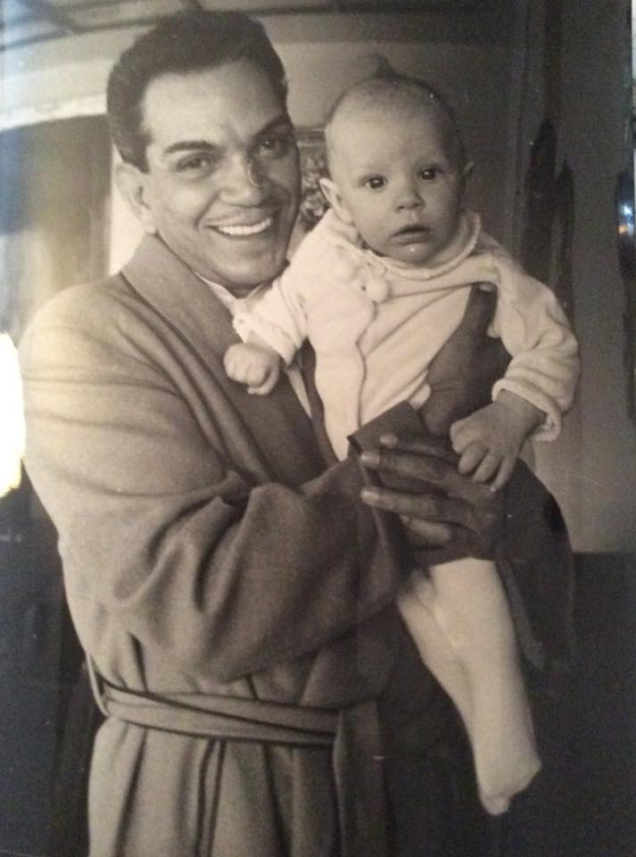

Mario Moreno, conocido artísticamente como Cantinflas, es una figura icónica del cine mexicano y mundial. Su vida es una narrativa fascinante de superación y éxito.
Nacimiento y Orígenes Humildes: Mario Moreno Cantinflas nació el 12 de agosto de 1911 en la Ciudad de México, México. Creció en una familia humilde y experimentó la pobreza desde una edad temprana.
Inicios en el Espectáculo: Desde joven, Mario mostró habilidades como acróbata y comediante callejero en la Ciudad de México. Estas actuaciones callejeras fueron su primera incursión en el mundo del espectáculo.
Fallecimiento y Legado Perdurable: Mario Moreno Cantinflas falleció el 20 de abril de 1993 en la Ciudad de México. Su legado como uno de los comediantes más queridos y respetados de la historia del cine sigue vivo, y sus películas continúan siendo apreciadas por nuevas generaciones de espectadores en todo el mundo.
Cuadro con Títulos, Descripciones e Imágenes
DATOS IMPORTANTES
Título
Descripción
Imagen
Películas
El padrecito, El Barrendero, Por mis pistolas, La vuelta al mundo en ochenta días..
Padres
Pedro Moreno Esquivel y Soledad Reyes Guízar
Hijos
Mario Arturo Moreno Ivanova

Oficio en la vida real
Ayudante de zapatero, Bolero, Cartero, Boxeador, Torero, posteriormente paso de estar en el circo y finalmente en el cine